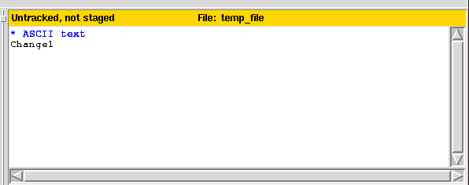
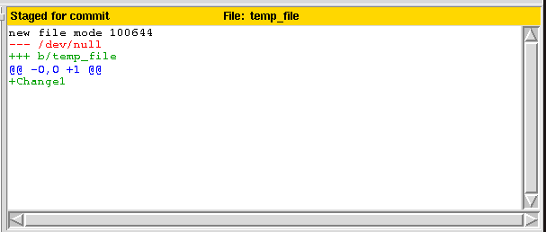
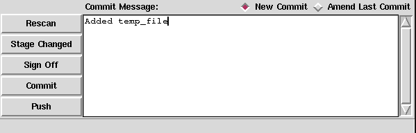

Week 5Day 1 - "This isn't working for me John"
Dealing with resistance
So, now that the team have discovered the basics of branching, they are conceptually ready to start using it in earnest.
When implementing a version control system, or shifting from one to another, it is important to make sure that the users are happy with the system and know how to use it.
Training is a big issue.
It would seem that the team have coped with the initial usage of Git and that they have utilised each others talents in specific areas to pull together a good learning environment.
However, one thing to bear in mind is that some users may secretly be having a far worse experience than their colleagues.
It is also common for these people to suffer in silence, or to wait until they are asked for their opinions on the system before they bring up any issues.
It is because of these very factors that you should probably consider employing a parallel implementation.
This is exactly what John decided to do with Tamagoyaki Inc's implementation of Git.
Whilst a parallel implementation does take duplicate effort in some areas, it also allows the team to return to their original system, should insurmountable obstacles present themselves.
However, a parallel implementation should never be an excuse not to eventually shift over to the new system, unless serious issues are discovered.
Terminology - Parallel Implementation
Parallel implementation means keeping your old system running, whilst bringing up a new one.
It incurs extra effort in many areas, such as system administration, backups and system usage, but it allows people to evaluate a product in a real life situation.
Usually people will have completed all of their preliminary testing before moving onto Parallel implementation.
It would be assumed that you were fairly certain that your were going to move forward with a final implementation, before taking the time of setting up and training people on the new system.
It does however allow people to continue with the day jobs, without the risk of issues with the new system completely blocking them from working.
This is often a critical factor when implementing a new system.
If the system is successful, over time, the users will migrate away from the old system and start using the new system exclusively.
Care should also be taken that whilst in the midst of parallel implementation, both systems remain up to date at all times, this is often the trickiest part.
In Tamagoyaki Inc's case, because they were just using tarballs of their code base, it is easy for them to tar up a folder, as well as commit it to the repository.
In the trenches...
"I'm sorry John, but I just can't do this anymore!"
Eugene was leaning over the partition wall, the keys that hung around his neck clattering loudly as he swayed.
"You hard core devs may be happy with all that command line junk, but I'm a GUI kinda guy. It doesn't come as easily for me as if does for you."
"You should learn how to use a computer properly then," shouted Klaus before laughing.
Eugene was livid, "You're such a damn elitist Klaus. I'm so glad I don't have to share a pod with you anymore, you zealot."
With that, Eugene was off, flinging open the door to the office area and stomping off to his desk.
"Nice one Klaus," said John,
"You know, you could be a little more tactful. We do still need sign off from him to complete this project."
Klaus shrugged.
* * *
"Listen Eugene, I think I have a way to help you out. There is a GUI component to Git that you can use."
John was trying his best, but five minutes of grovelling to Eugene, hadn't exactly paid off.
"I'll try your GUI, but if I don't like it, I'm not signing off."
He was serious too.
"I don't have time to waste learning this system, I never needed versioning before, why should I need it now."
"We have to work together on things now Eugene," began John,
"You know there is a merger looming, right?"
Eugene looked up, a little stunned.
"We have to show we can function well as a team, that we have everything in hand. Let's leave the integration till the end of the week, to give you a little more time to get used to things."
"OK" said Eugene,
"I'll give it my best shot"
Sometimes, dealing with resistance to new systems is hard.
In Tamagoyaki Inc, John was blessed with the fact that only one developer didn't like the system he had picked.
Fortunately, the developer in question was only really concerned with the lack of a GUI, something that Git actually provides anyway.
It is very important to listen to users issues and questions.
Often they may discover a big hole in your initial planning which you would never have seen.
Never dismiss a concern before looking into it as it can be difficult for one person to understand the entire process in place during development, no matter how well documented it is.
Going through a period of User Acceptance Testing is crucial before complete adoption is even considered.
Let us take a while to explore the built in GUI that Git comes bundled with.
A little bit of graphics
Whilst using a GUI can be faster for some operations, it is also worth noting that with very few exceptions, GUIs are often less feature rich than their CLI counterparts.
It is very time consuming to write a GUI that can deal with every command option a user desires, so often the GUI will handle the most common use cases, leaving the CLI to handle special cases.
Git is no exception to this rule.
Whilst the GUI component is a very capable tool indeed, it does lack most of the advanced functionality that can be found on the command line.
In fact, there are even some of the basic parameters to some of the commands that we have used earlier, that are not available in the GUI counterpart.
We can invoke the GUI by running the git gui command.
We will be presented with a window similar to that in Figure 1.
Note that in this case, we are running it against our test repository that we have been working on through previous chapters.
 |
|
Figure 1
Initial Git GUI view |
|
This initial window is composed of four key areas
- Unstaged - This area on the screen shows all of the items present in the working copy which are unstaged, that is to say they have not yet been added to the index and so will not be included if a commit were to take place.
- Staged - This area on the screen shows all of the items present in the index or staging area.
Everything listed here will be included if a commit takes place.
- Content View - This region of the window will show the contents of an item if it is selected in either the Unstaged or Staged areas.
If the file is already tracked, then the window will show a diff between the last committed version and the chosen version.
- Commit - From the commit section of the screen, the commit message can be written, the commit performed, the directory rescanned for changes, as well as other operations.
If we take a closer look at the Unstaged area of the screen, we see something interesting.
This is shown in Figure 2.
 |
|
Figure 2
Unstaged section showing our temp_file |
|
This is the only file in our working copy which contains unstaged changes.
That should not be surprising as this file has never been added to the repository so it is not considered tracked by Git.
If you remember, it was actually a temporary file that we piped some output to in an earlier chapter.
If we click on the filename of this file, the Content View area changes to show Figure 3.
|  |
|
Figure 3
Content view of temp_file |
|
In the top banner section of the Content View we see an indication of the file's status.
In this case it is Untracked and not staged.
We can change this by clicking on the small blank page icon to the left of the file name in the Unstaged area of the screen, see Figure 4.
 |
|
Figure 4
Staged section |
|
Now the file has moved into the Staged area of the screen as would be equivalent to us doing a git add temp_file.
The file has been added to the index and is now ready for committing.
We also notice a difference in the Content View of temp_file.
This can be seen in Figure 5 and now shows a patch view of addition of the file, as opposed to just the contents of the file.
|  |
|
Figure 5
Content view of temp_file |
|
Now the bar reads that the file is Staged for commit, which is exactly what we expect.
We are now going to fill out a commit message, which can be seen in Figure 6, and press the Commit button, to initialise a commit into the repository.
|  |
|
Figure 6
Preparing for commit |
|
It should be noted here that we could have performed multiple operations here, adding several files to the staging area before pressing that all important Commit button.
We will finish this section off by checking the status area at the very bottom of the screen.
In Figure 7, you should see that our latest operation has been summarised by the string Created commit 35243bf8: Added temp_file
 |
|
Figure 7
Status message showing a new commit ID |
|
|
|